현실적

네이버 박재성
2015.4.29
AngularJS

2009년 Miško Hevery의 개인 프로젝트로 시작.
처음 개발시 웹 개발자를 대상으로 하지 않았고,
개발은 모르지만 HTML은 이해하는
디자이너와 같은 사람들을 대상으로 함.
첫 AngularJS 프로젝트 : Google Feedback
| 기간 | LOC | |
|---|---|---|
| GWT | 3명 x 6개월 = 18MM | 17,000 |
| AngularJS | 1명 x 3주 = 0.75MM | 1,000 |
어떻게 성장했나?
-
 !
(강력한 마케팅, 구글 브랜드에 우호적인 개발자 커뮤니티)
!
(강력한 마케팅, 구글 브랜드에 우호적인 개발자 커뮤니티)
-
JavaScript를 잘모르더라도, 프레임워크를 배우면 개발할 수 있다.
https://news.ycombinator.com/item?id=8652677 - 2012 중반부터 강력히 밀기 시작 - Writing an AngularJS App with Socket.IO (2012/07/27)
얼마만큼의 관심?: 해외
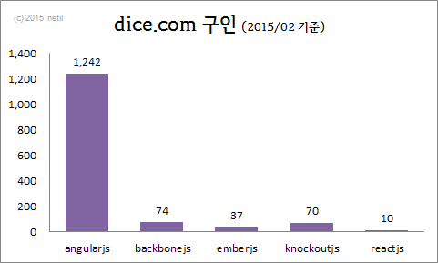 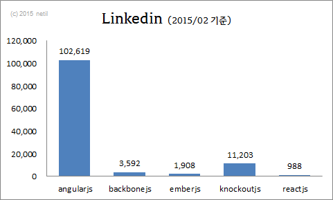 https://www.dice.com/jobs?q=angularjshttps://www.linkedin.com/vsearch/p?type=people&keywords=angularjs
얼마만큼의 관심?: 국내
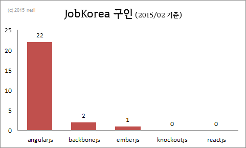 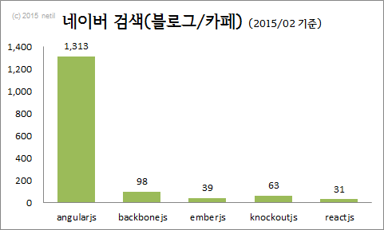 http://www.jobkorea.co.kr/sm/search.asp?stext=angularjshttp://cafeblog.search.naver.com/search.naver?where=article&ie=utf8&query=angularjs
왜 개발자들이 좋아할까? (특히 back-end)
- 코드 일관성 (개인 스타일 편차 적음)
- 구조적 (MVC 패턴)
- 코드량 감소 (이벤트 바인딩, 뷰 업데이트 코드 등)
- 코드의 재사용
- 양방향 데이터 바인딩(Two-Way Data Binding)
- 다양한 Module을 활용한 빠른 개발
간단 AngularJS 예제 #1
간단 AngularJS 예제 #2
양방향 데이터 바인딩
(Two-Way Data Binding)
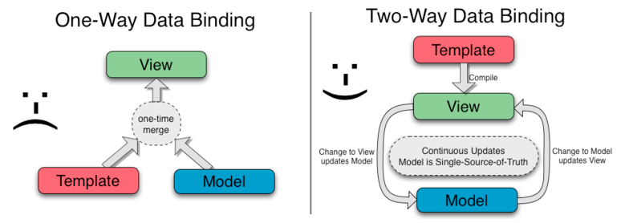
초기화 과정
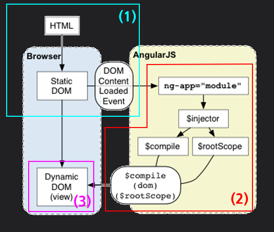
- 1. DOMContentLoaded 이벤트에서 실행
- 2. AngularJS 영역 초기화 과정 :
- 문서 내에서 ng-app 지시자 확인
- 모듈 및 지시자와 연관된 모듈을 로딩
- 어플리케이션 injector 생성
- DOM의 컴파일
컴파일은 DOM트리를 순회하면서 지시를 찾아 매칭하고(Compile 과정), 이후 지시자와 스코프를 결합(Link 과정)해 모델의 변경을 뷰에 출력하는 일련의 처리 작업을 의미
- 3. 변경된 DOM의 화면 출력
개발방법 비교:
DOM 제어 vs AngularJS

개발방법 비교: DOM 제어
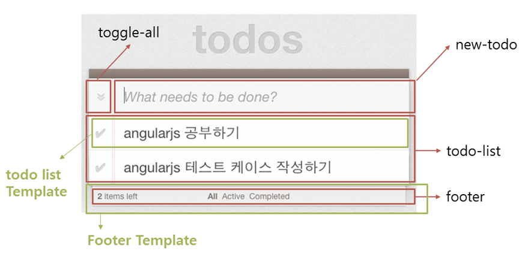개발방법 비교: AngularJS
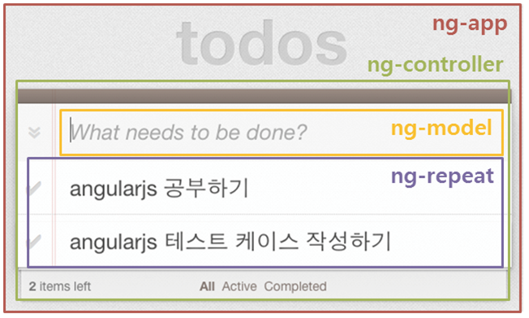개발방법 비교:
DOM 제어 vs AngularJS
| 구분 | 종류 | 크기(byte) | Total(byte) |
|---|---|---|---|
| DOM 제어(Jindo) | HTML | 1,164 | 4,951 (100%) |
| JavaScript | 3,787 | ||
| AngularJS | HTML | 2,059 | 3,161 (63.84%) |
| JavaScript | 1,102 |
적용사례 #1
← click to refresh →
적용사례 #2
그러나 고민할 점
Websites using Angular JS
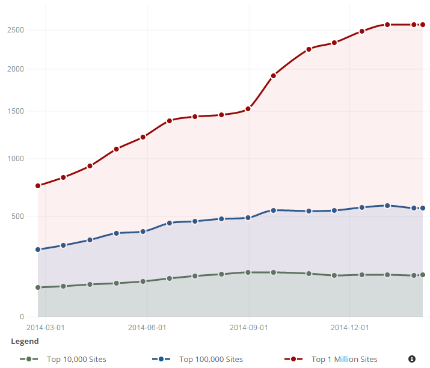 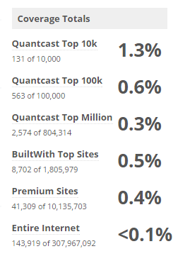
Angular JS Usage StatisticsPeter-Paul Koch (PPK)

“Angular is mostly being used by people from a Java background because its coding style is aimed at them. Unfortunately they aren’t trained to recognise Angular’s performance problems.”
Angular 2.0 - “I don’t think Angular will survive the rewrite.”
고려사항: 성능 #1 TodoMVC Benchmark
http://dsuket.github.io/todomvc-perf-comparison/고려사항: 성능 #2 초기 로딩&렌더링
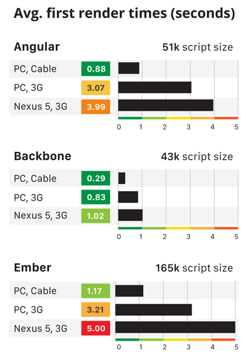
http://www.filamentgroup.com/lab/mv-initial-load-times.html고려사항: 성능 #3 데이터 처리
100개 목록 데이터가 HTML에 포함되어 처리되는 경우
← click to refresh →
고려사항: 성능 #4 데이터 바인딩
데이터 편차에 따른 처리 속도
One-Way Data Binding vs. Two-Way Data Binding
고려사항: FOUC*
<body ng-app="myApp">
<div ng-controller="myControllerList">
<ul>
<li ng-repeat="fruit in fruits">
<span>{{fruit.name}}</span> / <span>{{fruit.qty}}</span>
</li>
</ul>
<button onclick="location.reload()">reload</button>
</div>
<script type="text/javascript" src="https://code.angularjs.org/1.3.8/angular.min.js"></script>
<script type="text/javascript">
angular.module("myApp",[])
.controller("myControllerList", function($scope) {
$scope.fruits = [
{ name: '메론', qty: 9 },
{ name: '망고', qty: 3 },
{ name: '바나나', qty: 1 }
];
});
</script>
</body>고려사항: 이벤트 바인딩
양방향 데이터 바인딩을 위해 모델로 지정된 요소에
여래 개의 이벤트가 바인딩 된다.
호환성
- AngularJS 2.0은 1.x와 호환되지 않음
- 1.x --> 2.0 마이그레이션 방법 없음
- 1.3은 2.0 릴리즈 이후, 1.5 ~ 2년간만 지원예정
구글은?
“Google does not use Angular in production for their flag apps like Gmail or Gplus.”
현실적인 AngularJS 사용?
- SPA (Single Page Application)
- 빠른 프로토타이핑
- 어드민 / 내부 서비스
- 세밀한 DOM 제어가 필요하지 않은 경우
- 성능 이슈가 크리티컬하지 않은 경우
- 2.0 스타일로 개발하고자 한다면, 기다려야 한다.(late 2015)
도입 할까?,말까?
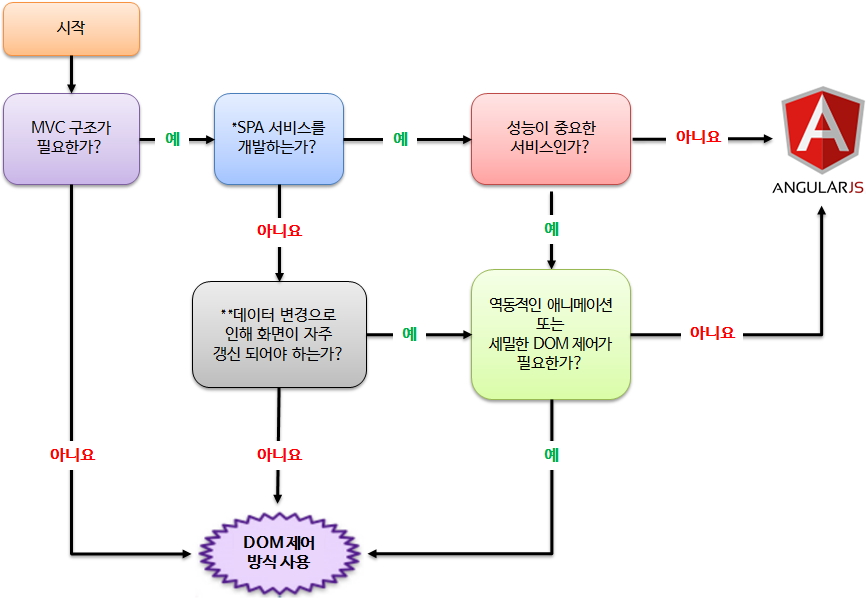AngularJS 도입 선택 가이드
muchas gracias